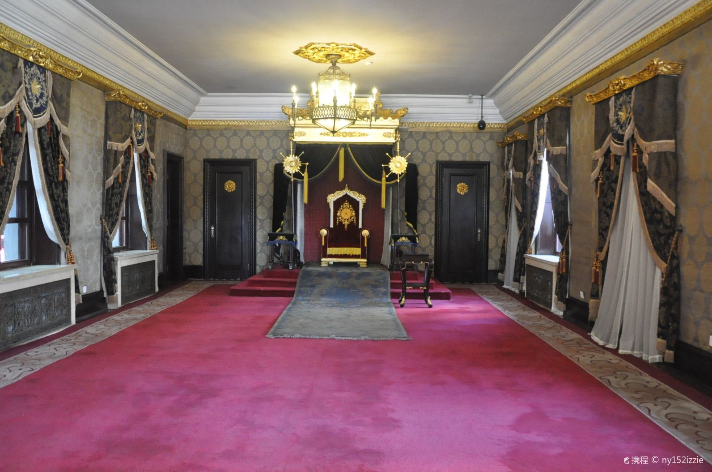
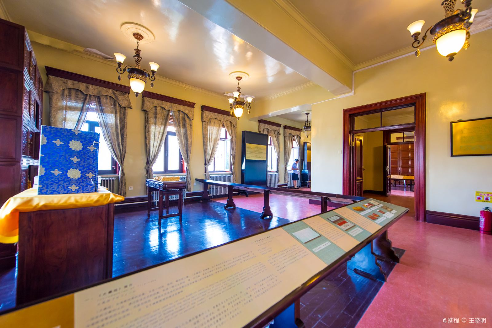
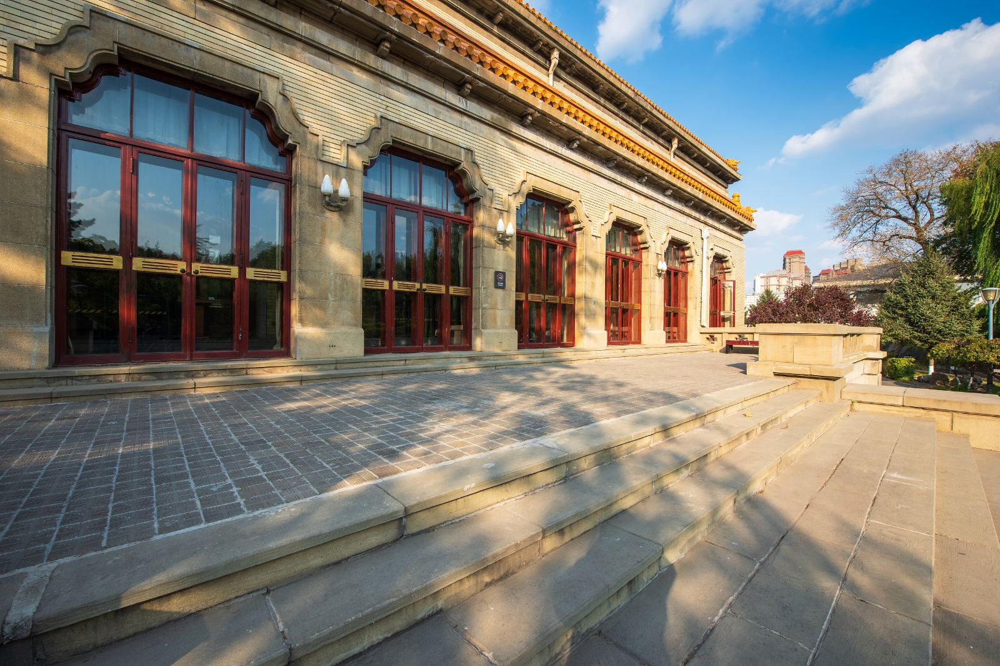
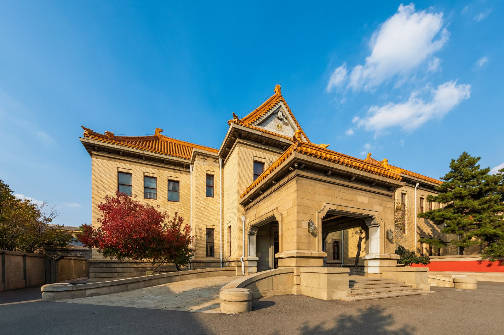
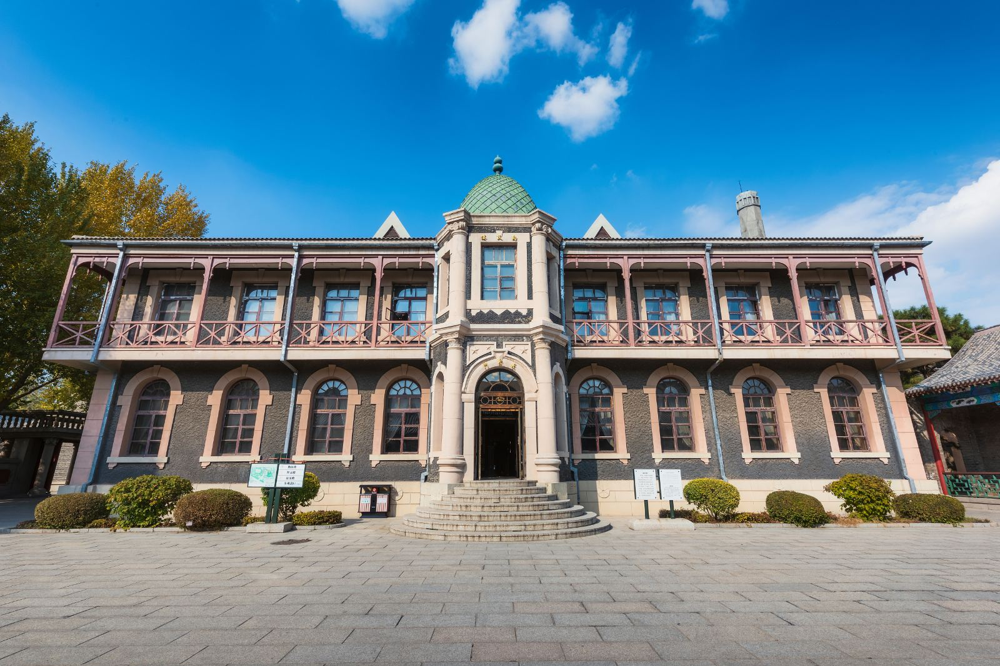

折叠 景区介绍
伪满皇宫博物院是在中国清朝末代皇帝爱新
 觉罗·溥仪充当伪满洲国傀儡皇帝时居住的宫殿旧址上建立的宫廷遗址型博物馆，国家AAAAA级旅游景区。
觉罗·溥仪充当伪满洲国傀儡皇帝时居住的宫殿旧址上建立的宫廷遗址型博物馆，国家AAAAA级旅游景区。
伪满皇宫是在原吉黑榷运局官署的基础上陆续改建扩建而成的，先后用作溥仪的“执政府”与“帝宫”。伪满皇宫占地面积13.7万平方米，伪满皇宫主体部分即核心保护区为4.6万平方米，其余为附属部分。主体部分以中和门为界分为内廷和外廷两部分。内廷包括缉熙楼、中西膳房、御花园、同德殿、书画库等，是溥仪及其眷属的生活区。外廷包括勤民楼、怀远楼、嘉乐殿、宫内府、日本宪兵室等，是溥仪的政务活动区。此外，伪满皇宫还有御用汽车库、马厩、跑马场、花窖、禁卫军营房、铁路专用线、建国神庙、祭祀管理机构、近卫军营房等附属设施。伪满皇宫大小建筑数十座，建筑风格古今并陈、中外杂揉，具有典型的殖民性特点。
伪满皇宫以其多重内涵、独特价值，成为中国近现代殖民文化的典型纪念地和警示性教育基地。1981年，吉林省人民政府公布伪满皇宫旧址为吉林省文物保护单位。
目前，伪满皇宫博物院已经成为占地20万平方米，集伪满宫廷（核心保护区）、红色旅游、文化休闲区、旅游商服于一体的特色人文景区。
折叠 交通攻略
可以乘坐80路、264路、225路、114路、256路、276路、287路。38路等公交车到达伪满皇宫博物院。
折叠 门票信息
园区通票(伪满皇宫/跑马场/东北沦陷史陈列馆)
成人：60元/人；
军人/大中学生：30元/人，凭军官/士兵证（现役军人）、学生证（不含成人教育、研究生）；
小学生：20元/人；
60岁以上老年人凭有效证件，门票半价优惠；
团体参观：40人以上团体打九折，72元/人，80人以上团体打八折，64元/人
免票政策：
1.3米以下儿童；
残疾人凭残疾证件；
离休干部凭有效证件；
70岁以上老年人凭有效证件。
折叠 开放时间
5月1日—10月10日：开馆时间：8：30分
停票时间：16：20分
闭馆时间：17：20分
10月11日—次年4月30日：开馆时间：8：10分
停票时间：14：40分
闭馆时间：16：50分
折叠 官方电话
0431-82866611, 0431-82860547。
折叠 景点相册


折叠 最佳季节
长春最佳旅游时间是冬季。长春东部和南部虽距海洋不远，但由于长白山地的阻挡，消弱了夏季风的作用；西部和北部为地势平坦的松辽平原，西伯利亚极地大陆气团畅通无阻，冬季风的势力影响很大。12月-2月间是长春最冷的时候，也是最美的时候。冬季银妆素裹，玉树琼花，是欣赏冰雪艺术，进行滑雪、滑冰、高台冰坡、冰帆、雪橇等旅游活动的佳境。长春的最佳旅游时间冬季是相对于这个时候可玩性更高来说的，要看美景还是在春夏秋三季。
折叠 必看贴士
小贴士：1-2月长春气温基本在0度以下，户外活动要注意防寒，特别是头部、手足等部位；雪上光线强烈，防晒工作不可马虎；另外滑雪应戴太阳镜，以免出现雪盲现象。